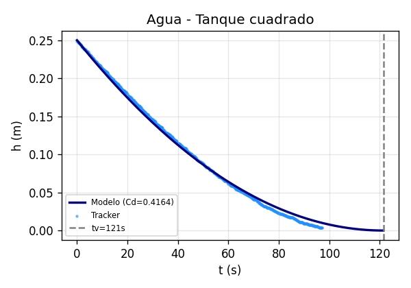
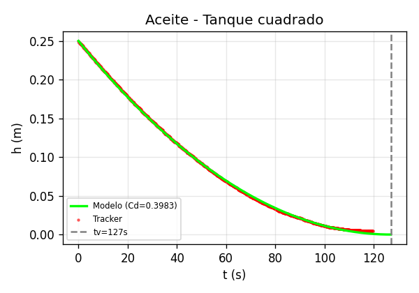
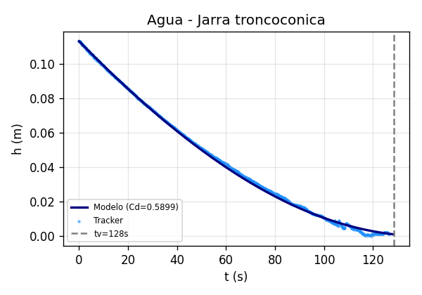
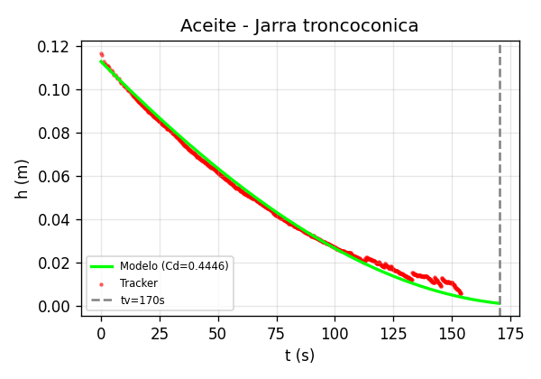

Resumen
Este proyecto analiza el vaciado gravitacional de dos geometrías: un tanque rectangular de sección constante (7×8 cm) y una jarra troncocónica (radios 5.7 y 6.15 cm, altura 11.3 cm). Empleando agua y aceite de cocina como fluidos de trabajo, se determinó el coeficiente de descarga $C_d$ ajustando el modelo teórico a los datos de altura $h(t)$ registrados con el software Tracker.
Los resultados muestran que el $C_d$ obtenido es menor que el valor ideal de $0.62$ en todos los casos, debido a la geometría real de los orificios. El aceite presentó un $C_d$ consistentemente menor que el agua por efecto de su mayor viscosidad. Las curvas teóricas ajustadas con los $C_d$ experimentales describen con alta precisión los datos medidos en ambas geometrías.
Objetivos
- Determinar experimentalmente el coeficiente de descarga $C_d$ para dos geometrías de tanque mediante el ajuste del modelo teórico a datos de altura vs. tiempo obtenidos con Tracker.
- Comparar el comportamiento del $C_d$ para agua y aceite de cocina, evaluando el efecto de la viscosidad sobre la dinámica de vaciado.
- Cuantificar la incertidumbre combinada (estadística e instrumental) del $C_d$ mediante propagación de errores.
Marco Teórico
Derivada del teorema de Bernoulli entre la superficie libre y la sección de salida:
Para contrarrestar la reducción del área efectiva (vena contracta) y la fricción:
Modelado Matemático Especial
A. Solución Analítica para Tanque Rectangular:
Al integrar la ecuación diferencial con sección transversal constante $A_T$ se obtiene:
Invirtiendo para despejar $C_d$ desde los datos experimentales:
B. Solución Implícita para Tronco de Cono:
Con $A_T(h) = \pi(r_0 + \alpha h)^2$ y $\alpha = (R - r_0)/h_0$, la integral conduce a:
La relación es implícita: se obtiene $t(h)$ pero no puede despejarse $h(t)$ analíticamente. Para graficar se evalúa $t$ para valores de $h$ entre $0$ y $h_0$.
Para cada punto $(t_i, h_i)$ registrado con Tracker se despeja $C_d$ de la fórmula correspondiente a cada geometría. El valor final se reporta como el promedio $\overline{C_d}$ de todos los puntos, con incertidumbre combinada:
La incertidumbre estadística es $\sigma/\sqrt{N}$ (tipo A). La instrumental (tipo B) se obtiene por propagación de los errores de medición de $A_T$, $A_o$ y $h_0$ (regla $\pm 1$ mm, calibre $\pm 0.05$ mm).
Metodología Experimental
| Recipiente | Dimensiones | Altura $h_0$ | Orificio |
|---|---|---|---|
| Troncocónico (jarra) | $R=6.15\text{ cm}$, $r_0=5.7\text{ cm}$ | $11.3\text{ cm}$ | Circular ($d=5\text{ mm}$) |
| Rectangular | $7 \times 8\text{ cm}$ cte. | $25.0\text{ cm}$ | Circular ($A_o = 0.25\text{ cm}^2$) |
Accede al registro audiovisual en Google Drive utilizado para la toma de muestras y cronometraje:
Resultados y Análisis




| Parámetro | Tanque Rectangular | Jarra Troncocónica |
|---|---|---|
| $C_d$ Agua | $0.4164 \pm 0.0112$ | $0.5899 \pm 0.0166$ |
| $C_d$ Aceite | $0.3983 \pm 0.0107$ | $0.4446 \pm 0.0125$ |
| $t_v$ Agua | $121.4\text{ s}$ | $128.4\text{ s}$ |
| $t_v$ Aceite | $127.0\text{ s}$ | $170.3\text{ s}$ |
Para cada punto $(t_i, h_i)$ registrado con Tracker se despejó $C_d$ de la fórmula correspondiente a cada geometría. El valor final se obtuvo como el promedio de todos los $C_{d,i}$ válidos ($N \approx 580{-}1200$ puntos por experimento).
Tanque rectangular:
Jarra troncocónica:
Hoja de cálculo completa con todos los puntos, estadísticas y análisis de incertidumbre:
Conclusiones
• El $C_d$ como parámetro de ajuste: Sin el coeficiente de descarga, el modelo de Torricelli predice vaciados irreales. Los $C_d$ obtenidos (todos $< 0.62$) corrigen las pérdidas por contracción de la vena líquida y fricción en el orificio real.
• Efecto de la geometría del orificio: La jarra troncocónica presentó un $C_d = 0.5899$ (agua), cercano al ideal de $0.62$, indicando un orificio con bordes bien definidos. El tanque rectangular mostró un $C_d = 0.4164$, reflejando mayores pérdidas hidráulicas en su orificio.
• Efecto de la viscosidad: En ambas geometrías, el aceite de cocina ($C_d \approx 0.40-0.44$) presentó un coeficiente menor que el agua ($C_d \approx 0.42-0.59$), consistente con el aumento de pérdidas por fricción en fluidos más viscosos.
• Incertidumbre: La componente instrumental (regla $\pm 1$ mm, calibre $\pm 0.05$ mm) domina sobre la estadística ($\sigma/\sqrt{N} \sim 0.001$). Mejorar la precisión dimensional del montaje tendría mayor impacto que aumentar el número de datos.